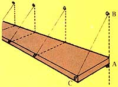

Seed savers usually face (or avoid, actually) the danger of cross-pollination between different species of squash, pumpkin, cucumber, etc., by resorting to growing a single variety. In McMinnville, Oregon, however, Floyd Moore has devised a better way to deal with the problem of potential mix-ups. A day or so before the female blossom (the one with the little pumpkin or squash or whatever at its base) opens up, just snap a small rubber band around the end of the petals. After a couple of days remove this retainer and-with a cotton swab or a camelhair brush-do your own pollination. Then replace the rubber band and tie an additional color-coded band around the stem so that-when harvest time rolls around-you'll know which plants contain true-to-type seeds . . . and which are your own hybrids.
" 'Chris's shelves' (named for the friend who taught me this construction method) require a minimum of materials and only a little labor," says Rich Weinhold of Redding, California. Sound appealing? You bet it does! A hammer, pliers with a wire cutter, a tape measure, and perhaps a stud finder and level are all that's needed for the installation. And the only materials required are the shelf boards of your choice, common or box nails, and some twine or wire. Each shelf (see diagram) is supported at stud intervals (thus the probable need for a stud finder), rests on nails driven into the wall, and hangs at the front by the twine or wire.
The initial step in this construction process is to locate the studs and determine the desired height of each shelf. Leave 1/2" to 3/4" of each nail exposed in order to be able to wrap the twine (or wire) around at points B and C . . . as well as to support the shelf at point A. Front-to-rear leveling is then achieved easily by simply wrapping turns of the twine about the supporting nails to get the desired angle.
And-of particular interest to apartment and home renters (and landlords)-these shelves are inexpensive enough to leave for the next tenant. However, if you do choose to take your shelves with you when you depart the premises, the nail holes can easily be filled with Spackle and will be almost invisible. (To do this properly, though, place a small block of wood beneath the head of the hammer as you "claw" the fasteners out.) Thanks to Rich and Chris for this portable shelf idea.
Naturally enough, a clean wood shingle-or any other type for that matter-roof is gonna last longer than a dirty one. The problem is turning the latter into the former . . . preferably without crawling around the top of your house on your hands and knees scraping accumulations of moss and dirt from individual shingles. Tom Zeitler of Suring, Wisconsin handles this usually unpleasant chore with a minimum hassle by sprinkling lime freely along just the peak of the housetop. The enterprising Mr. Zeitler then lets the rain do the work. Which it does by dissolving the lime, spreading it over the other shingles, thereby removing just about every particle of moss and other accumulated debris.
An instant greenhouse can be fashioned from an old car body, suggests Maple Valley, Washington's Blanche Haynes, provided the vehicle's windows are still intact. Just arrange your plant flats, crates, and other containers within the cleaned-out automobile hull in whatever way you think will make for the most convenient watering and tending. Make it easy on yourself. And, for daytime ventilation, just crank open a window or two. Maybe you'll even find a vehicle (planter) with a sun roof!
Got a screen door, an outhouse door, or perhaps just a small gate that you'd like to close automatically? Well, those long coil springs made for just that purpose are nice but-as James Tinger of Hermitage, Tennessee points out-you don't need 'em if there's an old inner tube handy . . . and there almost always is. Cut a 2"-wide strip the length you need (it'll depend on the distance your door or gate swings) from the tube. Then fold over 1" of each end of the length of rubber and fasten the stretcher to the door, gate, fence, etc. (using nails or screws attached to 1" X 1" X 2" wood blocks). You'll laugh-in admiration-at the simple practicality of this down-home idea.
If you do have an inner tube-especially from a truck tire-that's being cut up for whatever reason . . . save that valve stem. Why? To make a simple-but effective-compression tester for your machine, whether it's a car, truck, tractor, or rototiller. Just take an old spark plug from the vehicle to be tested and break away the glass part of the electrode, leaving the metal threaded portion intact. Then take that truck tube air valve you've been holding on to and braze it to the threaded (now glassless) section of the plug. Screw the new "tester" into the spark plug hole of the machine you're testing and apply air pressure-with a pump, f' r instance-through the air valve. According to Joe Chasse of Renton, Washington (who sent us this little trick), if you then hear air at the exhaust pipe you've got a bad exhaust valve . . . air detected at the carburetor means a bad intake valve . . . and air at the breather outlet indicates bad rings.
Don't despair over a burned pot or pan. We all blacken cooking utensils from time to time. The question is what to do about it. Easy. Clean the blackened utensil as best you can with conventional methods (scrubbing, scraping, soaking, cursing). Then pour salt in it and fill the pot or pan with at least two inches of the seasoning if the sides are also burnt.
Next heat the salt-laden dish, occasionally stirring its contents around. After the salt is thoroughly heated remove the pot and let it-and the seasoning-cool. Then, when you pour off the salt, the burnt sides and bottom of the pan-in the form of ash-should pour off as well!
Although Iona Westwood of Laytonville, California would be hesitant to try this method with enamelware, she's used it-with good results and no warping-on cast iron, aluminum, and stainless steel.
And don't throw away that salt after you've used it! Iona says you can just heat it up again (ash and all) and pour it into a sack or sturdy pillowcase for a down-home "hot water bottle". Tie off the top of the bag and wrap your new creation in a towel. It'll stay hot for hours . . . and is a good "salt of the earth" treatment for earaches, backaches, and just plain warming your footsies!
Summer is good ole-fashioned barbecue time and you've probably got the grill out already. Problem is, though, often there are coals or briquettes left over after you've done your cooking . . . and that fuel usually ends up going to waste. It doesn't have to be that way, though, not if you do as Ivan Gossage of Portola, California does.
Take a pail of water and-using a pair of tongs-drop the hot briquettes into the water. (They'll steam and spew, so stand back aways.) At first the little chunks of fuel will float . . . then eventually sink to the bottom. Good. Fish the wet coals out with the tongs and let 'em dry. Then bag up the recycled charcoal and it'll be all ready for your next outdoor feast!
Tree stumps can be a real nuisance, but Larry Halton has come up with an ingenious way of removing them from his DeSoto, Missouri land. First cut the top and bottom out of an empty metal 55-gallon drum. Then make a 6-inch hole in the side of the barrel, near the base, to provide a draft.
Dig a "moat" around-and a few inches out from-the stump you're trying to get rid of . . . place the drum (a 55-gallon drum is approximately 23" in diameter) down over the stump . . . and start a fire in the barrel. Your portable stove will burn what's left of the tree down below ground level in about 24 hours, more or less, depending on the size of the stump.
Donna Bartz of Hingham, Massachusetts informs us that her great-uncle always kept a couple of goldfish-gold in color, anyway-in the indoor watering tank that he'd fashioned for his horses from a half of an oak barrel. The presence of the tinny creatures kept the algae from growing in the tank and-whether it was fish sense or horse sense-each time after the horses drank, the fish were still swimming around. A good country example of a true symbiotic, one hand washes (and watches) the other relationship.
A big, shiny sheet of glass on your desk top looks good, feels good . . . even allows your special papers to show through for a quick-and-easy reference. Unfortunately, quarter-inch glass-which is what you need-is expensive. Doug Firebaugh of Freeport, Illinois, however, has a way around the excessive cost. He gets old bureau mirrors at garage and household sales. Then, with 50 cents' worth of nitric acid and a good pair of rubber gloves, Doug cleans the silver from the back of the mirror and-voila!-has a good-sized desktop cover of clear glass at a fraction of "new" cost.
A little behavioral psychology applied by Wendy Parsons of Endeavour, Saskatchewan is keeping her cow from kicking over the milk pail. It seems that if you tie a rope-very tightly!-around a balky cow's middle just in front of her udder, the cow will lose a great deal of the interest she had in kicking. (It gets uncomfortable real quick.) Then, as ole Bossy starts to lose her bad habit, you can gradually put the rope on looser and looser at milking time. Eventually, if she's got any memory at all, you'll be able to just lay the rope across her back (as a gentle reminder) and she still won't kick you or the bucket!
Paul Houston of Allons, Tennessee has been intrigued by the various ways MOTHER's staffers have used old refrigerators, and he's come up with a few unusual applications of his own.
Seems the worn-out coolers make ideal worm beds for Paul's worm farm . . . both the inner and outer cabinets. (The outer shells should have all the gook and insulating material thoroughly cleaned away, of course, as the fiberglass strands, etc., would probably kill any worms that came in contact with them.) Paul also mixes up worm bedding (before putting his little wigglers into the mix) in another recycled fridge . . . and-after closing off a few holes in its cabinet-he's found yet another of the old "cold chests" an ideal container to soak his worms' peat moss in.
Then too, Paul has found that reclaimed reefers are ideal storage cabinets for power tools and paint. Just screw 3/4" X 1" cleats as desired to the inside walls and cut shelves the approximate size from 518" plywood sheeting. And, by adding a scrap piece of one-inch water pipe for a hanger rod, the big shells become sturdy shop closets that are ideal for rain gear, dirty clothes, and the like.
Whether for economic or ecological reasons you can't-or don't want to-use steel wool to scrub your pots, try this tip from Lois L. Oswald of Saxonburg, Pennsylvania.
Get a short length of small, rough old steel chain and fasten the ends into a circle. Then just wrap a few strips of cloth around the chain and you've got a scrubber that'll pretty well last forever.
Sand or pebbles also make good scrubbers and can be found (and disposed of) anywhere. Just drop the sand or stones in the bottom of the pan, add a bit of water, and scrub away.
And if you don't want to try chains, pebbles, or sand . . . hang onto those plastic mesh onion bags! Bundle 'em up in the kitchen and use the little scrubbers to do just that . . . scrub your pots and pans. But Gayl Washington of Deposit, New York doesn't even stop there in her recycling of these empty onion holders.
Put a bar of soap in one of the bags, tie both ends, and you've got a great "scrubber" for feet, ankles, whatever! The mesh keeps hair from clinging to the soap and prevents chips of soap from clogging the drain.
And for an attractive, mouse-proof bread box, Gayl says to just paint a rural mailbox to match your kitchen decor. It'll be a surefire conversation piece and-when you're out of bread-just raise the flag to remind yourself!
OK. Now it's YOUR turn! We've all come up with some practical, down-home, time-tested solutions to the frustrating little problems that bug us every day. Let's hear YOUR best "horse sense"ideas so we can share 'em and all benefit.
Send your pointers to Down-Home Country Lore, P.O. Box 70, Hendersonville, N.C. 28739, and I'll make sure that the most useful of the suggestions 1 receive will appear in upcoming editions. A one-year subscription-or a one year extension of an existing subscription-will then be sent to each contributor whose tip does get printed in this column.-MOTHER.
|
 |
|
|